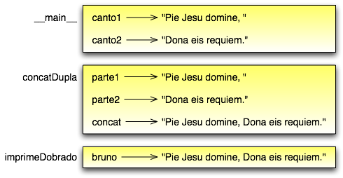

Tópicos
Você já viu um exemplo de uma chamada de função:
>>> type('32')
<type 'str'>
O nome da função é type e ela exibe o tipo de um valor ou variável. O valor ou variável, que é chamado de argumento da função, tem que vir entre parênteses. É comum se dizer que uma função ‘recebe’ um valor ou mais valores e ‘retorna’ um resultado. O resultado é chamado de valor de retorno.
Em vez de imprimir um valor de retorno, podemos atribui-lo a uma variável:
>>> bia = type('32')
>>> print bia
<type 'str'>
Como outro exemplo, a função id recebe um valor ou uma variável e retorna um inteiro, que atua como um identificador único para aquele valor:
>>> id(3)
134882108
>>> bia = 3
>>> bia(beth)
134882108
Todo valor tem um id, que é um número único relacionado ao local onde ele está guardado na memória do computador. O id de uma variável é o id do valor a qual ela se refere.
Python provê uma coleção de funções nativas que convertem valores de um tipo em outro. A função int recebe um valor e o converte para inteiro, se possível, ou, se não, reclama:
>>> int('32')
32
>>> int('Alô')
ValueError: invalid literal for int() : Alô
int também pode converter valores em ponto flutuante para inteiro, mas lembre que isso trunca a parte fracionária:
>>> int(3.99999)
3
>>> int(-2.3)
-2
A função float converte inteiros e strings em números em ponto flutuante:
>>> float(32)
32.0
>>> float('3.14159')
3.14159
Finalmente, a função str converte para o tipo string:
>>> str(32)
'32'
>>> str(3.14149)
'3.14149'
Pode parecer curioso que Python faça distinção entre o valor inteiro 1 e o valor em ponto flutuante 1.0. Eles podem representar o mesmo número, mas pertencem a tipos diferentes. A razão é que eles são representados de modo diferente dentro do computador.
Agora que podemos converter entre tipos, temos outra maneira de lidar com a divisão inteira. Voltando ao exemplo do capítulo anterior, suponha que queiramos calcular a fração de hora que já passou. A expressão mais óbvia, minuto / 60, faz aritmética inteira, assim, o resultado é sempre 0, mesmo aos 59 minutos passados da hora.
Uma solução é converter minuto para ponto flutuante e fazer a divisão em ponto flutuante:
>>> minuto = 59
>>> float(minuto) / 60
0.983333333333
Opcionalmente, podemos tirar vantagem das regras de conversão automática entre tipos, chamada de coerção de tipos. Para os operadores matemáticos, se qualquer operando for um float, o outro é automaticamente convertido para float:
>>> minuto = 59
>>> minuto / 60.0
0.983333333333
Fazendo o denominador um float, forçamos o Python a fazer a divisão em ponto flutuante.
Em matemática, você provavelmente já viu funções como seno (sen, sin em inglês) e logaritmo (log), e aprendeu a resolver expressões como sen(pi/2) e log(1/x). Primeiro você resolve e expressão entre parênteses (o argumento). Por exemplo, pi/2 é aproximadamente 1,571, e 1/x é 0.1 (se x for 10,0).
Aí você avalia a função propriamente dita, seja procurando numa tabela ou realizando vários cálculos. O sen de 1,571 é 1 e o log de 0,1 é -1 (assumindo que log indica o logaritmo na base 10).
Este processo pode ser aplicado repetidamente para avaliar expressões mais complicadas, como log(1/sen(pi/2)). Primeiro você avalia o argumento na função mais interna, depois avalia a função e assim por diante.
Python tem um módulo matemático que provê a maioria das funções matemáticas mais familiares. Um módulo é um arquivo que contém uma coleção de funções relacionadas agrupadas juntas.
Antes de podermos usar as funções contidas em um módulo, temos de importá-lo:
>>> import math
Para chamar uma das funções, temos que especificar o nome do módulo e o nome da função, separados por um ponto. Esse formato é chamado de notação de ponto:
>>> decibel = math.log10(17.0)
>>> angulo = 1.5
>>> altura = math.sin(angulo)
A primeira instrução atribui a decibel o logaritmo de 17 na base 10. Existe também uma função chamada log, usada para calcular o logaritmo em outra base ou o logaritmo natural de um número (base e).
A terceira instrução encontra o seno do valor da variável angulo. sin e as outras funções trigonométricas (cos, tan, etc.) recebem argumentos em radianos. Para converter de graus em radianos, divida por 360 e multiplique por 2*pi. Por exemplo, para encontrar o seno de 45 graus, primeiro calcule o ângulo em radianos e depois ache o seno:
>>> graus = 45
>>> angulo = graus * 2 * math.pi / 360.0
>>> math.sin(angulo)
0.707106781187
A constante pi também é parte do módulo math. Se você sabe geometria, pode checar o resultado anterior comparando-o com a raiz quadrada de dois dividido por dois:
>>> math.sqrt(2) / 2.0
0.707106781187
Do mesmo modo como nas funções matemáticas, as funções do Python podem ser compostas, o que significa que você pode usar uma expressão como parte de outra. Por exemplo, você pode usar qualquer expressão como um argumento para uma função:
>>> x = math.cos(angulo + pi/2)
Esta instrução toma o valor de pi, divide-o por 2, e soma o resultado ao valor de angulo. A soma é então passada como um argumento para a função cos.
Você também pode pegar o resultado de uma função e passá-lo como um argumento para outra:
>>> x = math.exp(math.log(10.0))
Esta instrução encontra o logaritmo natural (base e) de 10 e então eleva e àquela potência. O resultado é atribuído a x.
Até aqui, temos utilizado somente as funções que vêm com Python, mas também é possível adicionar novas funções. Criar novas funções para resolver seus próprios problemas é uma das coisas mais úteis de uma linguagem de programação de propósito geral.
No contexto de programação, função é uma sequência nomeada de instruções ou comandos, que realizam uma operação desejada. Esta operação é especificada numa definição de função. Até agora, as funções que usamos neste livro são pré-definidas e suas definições não foram apresentadas. Isso demonstra que podemos usar funções sem ter que nos preocupar com os detalhes de suas definições.
A sintaxe para uma definição de função é:
def NOME_DA_FUNCAO( LISTA DE PARAMETROS ) :
COMANDOS
Você pode usar o nome que quiser para as funções que criar, exceto as palavras reservadas do Python. A lista de parâmetros especifica que informação, se houver alguma, você tem que fornecer para poder usar a nova função.
Uma função pode ter quantos comandos forem necessários, mas eles precisam ser endentados a partir da margem esquerda. Nos exemplos deste livro, usaremos uma endentação de dois espaços.
As primeiras funções que vamos mostrar não terão parâmetros, então, a sintaxe terá esta aparência:
def novaLinha():
print
Esta função é chamada de novaLinha. Os parênteses vazios indicam que ela não tem parâmetros. Contém apenas um único comando, que gera como saída um caractere de nova linha (isso é o que acontece quando você usa um comando print sem qualquer argumento).
A sintaxe para a chamada desta nova função é a mesma sintaxe para as funções nativas:
print 'Primeira Linha.'
novaLinha()
print 'Segunda Linha.'
A saída deste programa é:
Primeira Linha.
Segunda Linha.
Observe o espaço extra entre as duas linhas. E se quiséssemos mais espaço entre as linhas? Poderíamos chamar a mesma função repetidamente:
print 'Primeira Linha.'
novaLinha()
novaLinha()
novaLinha()
print 'Segunda Linha.'
Ou poderíamos escrever uma nova função chamada tresLinhas, que produzisse três novas linhas:
def tresLinhas() :
novaLinha()
novaLinha()
novaLinha()
print 'Primeira Linha.'
tresLinhas()
print 'Segunda Linha.'
Esta função contém três comandos, todos com recuo de dois espaços a partir da margem esquerda. Já que o próximo comando não está endentado, Python reconhece que ele não faz parte da função.
Algumas coisas que devem ser observadas sobre este programa:
Pode não estar claro, até agora, de que vale o esforço de criar novas funções - existem várias razões, mas este exemplo demonstra duas delas:
Criar uma nova função permite que você coloque nome em um grupo de comandos. As funções podem simplificar um programa ao ocultar a execução de uma tarefa complexa por trás de um simples comando cujo nome pode ser uma palavra em português, em vez de algum código misterioso.
Criar uma nova função pode tornar o programa menor, por eliminar código repetido. Por exemplo, um atalho para ‘imprimir’ nove novas linhas consecutivas é chamar tresLinhas três vezes.
Como exercício, escreva uma função chamada noveLinhas que use tresLinhas para imprimir nove linhas em branco. Como você poderia imprimir vinte e sete novas linhas?
Reunindo os fragmentos de código da Seção 3.6, o programa completo fica assim:
def novaLinha() :
print
def tresLinhas() :
novaLinha()
novaLinha()
novaLinha()
print 'Primeira Linha.'
tresLinhas()
print 'Segunda Linha.'
Esse programa contém duas definições de funções: novaLinha e tresLinhas. Definições de funções são executadas como quaisquer outros comandos, mas o efeito é criar a nova função. Os comandos dentro da definição da função não são executados até que a função seja chamada, logo, a definição da função não gera nenhuma saída.
Como você já deve ter imaginado, é preciso criar uma função antes de poder executá-la. Em outras palavras, a definição da função tem que ser executada antes que ela seja chamada pela primeira vez.
Como exercício, mova as últimas três linhas deste programa para o topo, de modo que a chamada da função apareça antes das definições. Rode o programa e veja que mensagem de erro você terá.
Também a título de exercício, comece com a versão que funciona do programa e mova a definição de novaLinha para depois da definição de tresLinhas. O que acontece quando você roda este programa?
Para assegurar que uma função esteja definida antes do seu primeiro uso, é preciso saber em que ordem os comandos são executados, ou seja, descobrir qual o fluxo de execução do programa.
A execução sempre começa com o primeiro comando do programa. Os comandos são executados um de cada vez, pela ordem, de cima para baixo.
As definições de função não alteram o fluxo de execução do programa, mas lembre-se que comandos dentro da função não são executados até a função ser chamada. Embora não seja comum, você pode definir uma função dentro de outra. Neste caso, a definição mais interna não é executada até que a função mais externa seja chamada.
Chamadas de função são como um desvio no fluxo de execução. Em vez de ir para o próximo comando, o fluxo salta para a primeira linha da função chamada, executa todos os comandos lá e então volta atrás para retomar de onde havia deixado.
Parece muito simples, até a hora em que você lembra que uma função pode chamar outra. Enquanto estiver no meio de uma função, o programa poderia ter de executar os comandos em uma outra função. Mas enquanto estivesse executando esta nova função, o programa poderia ter de executar ainda outra função!
Felizmente, Python é adepto de monitorar a posição onde está, assim, cada vez que uma função se completa, o programa retoma de onde tinha parado na função que a chamou. Quando chega ao fim do programa, ele termina.
Qual a moral dessa história sórdida? Quando você for ler um programa, não o leia de cima para baixo. Em vez disso, siga o fluxo de execução.
Algumas das funções nativas que você já usou requerem argumentos, aqueles valores que controlam como a função faz seu trabalho. Por exemplo, se você quer achar o seno de um número, você tem que indicar qual número é. Deste modo, sin recebe um valor numérico como um argumento.
Algumas funções recebem mais de um argumento. Por exemplo, pow recebe dois argumentos, a base e o expoente. Dentro da função, os valores que lhe são passados são atribuídos a variáveis chamadas parâmetros.
Veja um exemplo de uma função definida pelo usuário, que recebe um parâmetro:
def imprimeDobrado(bruno):
print bruno, bruno
Esta função recebe um único argumento e o atribui a um parâmetro chamado bruno. O valor do parâmetro (a essa altura, não sabemos qual será) é impresso duas vezes, seguido de uma nova linha. Estamos usando bruno para mostrar que o nome do parâmetro é decisão sua, mas claro que é melhor escolher um nome que seja mais ilustrativo.
A função imprimeDobrado funciona para qualquer tipo que possa ser impresso:
>>> imprimeDoobrado('Spam')
Spam Spam
>>> imprimeDobrado(5)
5 5
>>> imprimeDobrado(3.14159)
3.14159 3.14159
Na primeira chamada da função, o argumento é uma string. Na segunda, é um inteiro. Na terceira é um float.
As mesmas regras de composição que se aplicam a funções nativas também se aplicam às funções definidas pelo usuário, assim, podemos usar qualquer tipo de expressão como um argumento para imprimeDobrado:
>>> imprimeDobrado('Spam'*4)
SpamSpamSpamSpam SpamSpamSpamSpam
>>> imprimeDobrado(math.cos(math.pi))
-1.0 -1.0
Como acontece normalmente, a expressão é avaliada antes da execução da função, assim imprimeDobrado imprime SpamSpamSpamSpam SpamSpamSpamSpam em vez de 'Spam'*4 'Spam'*4.
Como exercício, escreva um chamada a imprimeDobrado que imprima 'Spam'*4 'Spam'*4. Dica: strings podem ser colocadas tanto entre aspas simples quanto duplas e o tipo de aspas que não for usado para envolver a string pode ser usado dentro da string, como parte dela.
Também podemos usar uma variável como argumento:
>>> miguel = 'Eric, the half a bee.'
>>> imprimeDobrado(miguel)
Eric, the half a bee. Eric, the half a bee.
N.T.: “Eric, the half a bee” é uma música do grupo humorístico britânico Monty Python. A linguagem Python foi batizada em homenagem ao grupo e, por isso, os programadores gostam de citar piadas deles em seus exemplos.
Repare numa coisa importante: o nome da variável que passamos como um argumento (miguel) não tem nada a ver com o nome do parâmetro (bruno). Não importa de que modo o valor foi chamado de onde veio (do ‘chamador’); aqui, em imprimeDobrado, chamamos a todo mundo de bruno.
Quando você cria uma variável local dentro de uma função, ela só existe dentro da função e você não pode usá-la fora de lá. Por exemplo:
def concatDupla(parte1, parte2)
concat = parte1 + parte2
imprimeDobrado(concat)
Esta função recebe dois argumentos, concatena-os, e então imprime o resultado duas vezes. Podemos chamar a função com duas strings:
>>> canto1 = 'Pie Jesu domine, '
>>> canto2 = 'dona eis requiem. '
>>> concatDupla(canto1, canto2)
Pie Jesu domine, Dona eis requiem. Pie Jesu domine, Dona eis requiem.
Quando a função concatDupla termina, a variável concat é destruída. Se tentarmos imprimi-la, teremos um erro:
>>> print concat
NameError: concat
Parâmetros são sempre locais. Por exemplo, fora da função imprimeDobrado, não existe nada que se chama bruno. Se você tentar utilizá-la, o Python vai reclamar.
Para entender que variáveis podem ser usadas aonde, às vezes é útil desenhar um diagrama da pilha. Como os diagramas de estado, diagramas da pilha mostram o valor de cada variável, mas também a função à qual cada variável pertence.
Cada função é representada por um quadro. Um quadro é uma caixa com o nome de uma função ao lado dela e os parâmetros e variáveis da função dentro dela. O diagrama de pilha para o exemplo anterior tem a seguinte aparência:
A ordem da pilha mostra o fluxo de execução. imprimeDobrado foi chamado por concatDupla, e concatDupla foi chamado por __main__ (principal), que é um nome especial para a função mais no topo. Quando você cria uma variável fora de qualquer função, ela pertence à __main__.
Cada parâmetro se refere ao mesmo valor que o seu argumento correspondente. Assim, parte1 tem o mesmo valor de canto1, parte2 tem o mesmo valor de canto2 e bruno tem o mesmo valor de concat.
Se um erro acontece durante uma chamada de função, Python imprime o nome da função, e o nome da função que a chamou, e o nome da função que chamou a que chamou, percorrendo todo o caminho de volta a __main__.
Por exemplo, se tentássemos acessar concat de dentro de imprimeDobrado, teríamos um NameError:
Traceback (innermost last):
File "teste.py", line 13, in __main__
concatDupla(canto1, canto2)
File "teste.py", line 5, in concatDupla
imprimeDobrado(concat)
File "teste.py", line 9, in imprimeDobrado
print concat
NameError: concat
Esta lista de funções é chamada de traceback. Ela mostra em qual arquivo de programa o erro ocorreu, em que linha, e quais funções estavam sendo executadas naquele momento. Mostra também a linha de código que causou o erro.
Note a similaridade entre o traceback e o diagrama da pilha. Não é coincidência.
A essa altura, você deve ter percebido que algumas das funções que estamos usando, tais como as funções matemáticas, produzem resultados. Outras funções, como novaLinha, executam uma ação, mas não retornam um valor. O que levanta algumas questões:
A resposta para a terceira questão é afirmativa e nós vamos fazer isso no Capítulo 5.
A título de exercício, responda as outras duas questões testando-as. Se tiver dúvida sobre o que é válido ou inválido em Python, tente buscar a resposta perguntando ao interpretador.